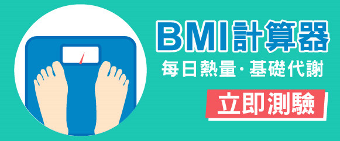
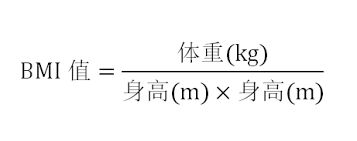

 
回首頁
B M I 計 算 機
BMI值計算公式: BMI = 體重(公斤) / 身高2(公尺2)
例如：一個52公斤的人，身高是155公分，則BMI為 :
52(公斤)/1.552 ( 公尺2 )= 21.6
體重正常範圍為 BMI=18.5～24
快看看自己的BMI是否在理想範圍吧!
身 高:
cm
體 重:
kg
開始計算
你的BMI為 ：
身體質量指數(BMI)(kg/m2)
腰圍(cm)
體重過輕
BMI ＜ 18.5
-
正常範圍
18.5 ≦ BMI ＜ 24
-
異常範圍
過重：24 ≦ BMI ＜ 27 輕度肥胖：27 ≦ BMI ＜ 30 中度肥胖：30 ≦ BMI ＜ 35 重度肥胖：BMI ≧ 35
男性：≧ 90公分 女性：≧ 80公分